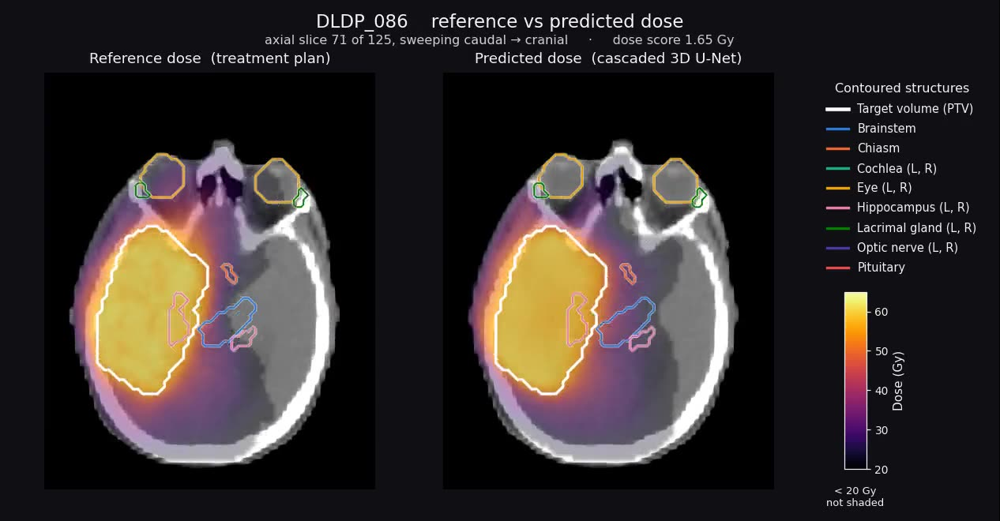

Abstract
Radiotherapy planning for glioblastoma starts with contours: the target volume and the organs at risk around it. Those contours take hours of a clinician's time, vary between experts, and are only checked dosimetrically much later, once a plan has been computed. A model that predicts the dose distribution in seconds could move that check forward — if the prediction reacts to a contour edit the way a re-optimised plan does.
We trained a two-level cascaded 3D U-Net on 60 curated glioblastoma VMAT cases and evaluated it on 20 held-out ones with the openKBP dose and DVH scores. The model reaches a mean dose error under 1 Gy against plans prescribing 60 Gy. We then tested it two ways: against ten plausible redrawings of one left optic nerve, each with its own re-optimised reference plan; and against target shapes the training set never contained — concave targets and targets split into several lesions — before and after adding six such cases to training. The model tracks the dose changes the re-planned contours produce, and the shape gaps close with a small amount of targeted data, which together support using such a model for dose-aware quality assurance of contours.
What we found
- Accurate enough to be useful. 0.94 Gy mean dose error over 20 test cases, and a DVH score of 1.95 Gy across the 13 organs at risk and the target. Inference takes about 15 s on a GPU against hours for a full plan.
- Out-of-distribution target shapes break conformity, and a little data fixes it. On concave targets the initial model loses the dose shaping the plan achieves; adding six concave cases to the training set recovers most of it. Multiple-lesion targets improve far less.
- It follows realistic contour edits. Across ten plausible redrawings of one left optic nerve, each with its own re-optimised plan, the dose change the model predicts correlates at +0.926 with the dose change the plan delivers.
- Geometry alone does not tell you that. The Dice coefficient between a redrawn contour and the original correlates at only −0.471 with the dose change. A contour can score well on Dice and still shift the dose, or score poorly and barely matter — which is the case for judging contours dosimetrically.
The model
A two-level cascaded 3D U-Net, the architecture that won the openKBP challenge: the second U-Net receives the first one's output concatenated with its own input. 15 input channels at 128³ — the normalised planning CT, the target volume and 13 organ-at-risk masks — and one continuous output channel scaled to 0–70 Gy.
| Setting | Value |
|---|---|
| Cohort | 125 glioblastoma cases planned to 60 Gy in 30 fractions (double full co-planar VMAT arc, 6 MV, Eclipse AAA) |
| Split | 60 train, 15 validation, 20 test; 5 excluded for missing contours |
| Loss | 0.5 · L1(reference, coarse) + L1(reference, refined) |
| Schedule | 80 000 iterations, He initialisation, five independent runs |
| Inference | four-flip test-time augmentation; ~15 s on an A5000, ~45 s on Apple silicon |
Both papers use the same architecture and the same 20-case test set. The journal version adds the out-of-distribution target shapes and three retrained models.
Watching it work
Every clip puts the planning CT in grey under a dose heat map, 20–65 Gy, with the target volume in white and one hue per organ at risk. Below 20 Gy the overlay is transparent so the anatomy stays readable, and opacity rises with dose so the high-dose region is where the eye goes.
Test cases are picked by measured properties — target size, how many organs the plan pushes above 20 Gy, and whether the prediction reproduces the plan's fine streak structure — not by eye.
Results
Two openKBP metrics, both in Gray and both lower-is-better. The dose score is the mean absolute error between predicted and planned dose inside a region; the DVH score is the mean absolute difference of dose-volume criteria — mean dose and D(0.1 cc) for an organ, D1/D95/D99 for the target.
| Test set | Initial | + concave | + multi-lesion | + both |
|---|---|---|---|---|
| Dose score | ||||
| Standard, 20 cases | 0.94 | 0.94 | 0.92 | 0.98 |
| Concave targets | 0.87 | 0.81 | 0.81 | 0.87 |
| Multiple lesions | 1.30 | 0.84 | 1.24 | 1.02 |
| DVH score, organs at risk | ||||
| Standard, 20 cases | 2.01 | 1.73 | 1.85 | 1.89 |
| Concave targets | 2.11 | 1.67 | 1.99 | 2.08 |
| Multiple lesions | 3.05 | 1.86 | 3.05 | 2.67 |
Reading across the first row: retraining does not cost anything on the standard test set. Reading down the concave and multiple-lesion rows: the concave update helps most, and helps on both kinds of hard shape.
Which organs are hardest
Dose score per organ at risk, averaged over the 20 test cases. Small organs sitting in the steep part of the dose gradient are hardest; the whole-volume score is much lower than any of them because most of the volume is far from the target.
Sensitivity to a redrawn contour
Ten redrawings of one left optic nerve, chosen because the target sits close to it, each validated as plausible by radiation oncologists and each re-planned in the treatment planning system. For every alternative, how far the mean dose to that contour moves from the original — in the plan, and in the prediction.
The pairs move together: a contour that costs the plan 7.6 Gy costs the prediction 5.6 Gy, and contours the plan barely notices the model barely notices either. Over the nine alternatives the correlation is +0.926, against −0.471 for the Dice coefficient over the same contours. Mean absolute dose change is 2.12 Gy for the plan and 2.04 Gy for the prediction, and no contour variation moved any organ dose by more than 5% of the prescription.
What to do with this
- A near-instant dose predictor is worth having. Under 1 Gy mean error on a 60 Gy prescription, from 60 training cases, is enough to give a planner a dosimetric view while contours are still editable.
- Cover the shapes you expect to see. Six extra cases of a target shape the training set lacked recovered most of the lost conformity. Curating for shape coverage is cheaper than more data in general.
- Judge a contour by its dose, not its overlap. Dice tells you two contours differ; only the dose tells you whether the difference matters to the patient.
- Keep the artifacts and re-derive the tables from them. Every number on this page is recomputed from the archived volumes by the code in the repository.
Citation
@inproceedings{kamath2023doseprediction,
title = {How sensitive are deep learning based radiotherapy dose prediction models to variability in Organs At Risk segmentation?},
author = {Kamath, Amith and Poel, Robert and Willmann, Jonas and Andratschke, Nicolaus and Reyes, Mauricio},
booktitle = {2023 IEEE 20th International Symposium on Biomedical Imaging (ISBI)},
pages = {1--4},
year = {2023},
organization = {IEEE}
}
@article{poel2023deep,
title = {Deep-Learning-Based Dose Predictor for Glioblastoma--Assessing the Sensitivity and Robustness for Dose Awareness in Contouring},
author = {Poel, Robert and Kamath, Amith J and Willmann, Jonas and Andratschke, Nicolaus and Ermi{\c{s}}, Ekin and Aebersold, Daniel M and Manser, Peter and Reyes, Mauricio},
journal = {Cancers},
volume = {15},
number = {17},
pages = {4226},
year = {2023},
publisher = {MDPI}
}